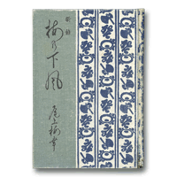

Books for Becoming Better Acquainted with Otowaya
Index > Onoe Baiko VI, Ume no Shitakaze (The Wind Beneath the Plum Trees)
Onoe Baiko VI, Ume no Shitakaze (The Wind Beneath the Plum Trees)
Hoboku Shoten, 1934An Outstanding Memoir by a Kabuki Actor
The memoirs of Onoe Baiko VI are one of the most outstanding of all geidan, or memoirs written by Japanese performing artists. Another well-known example of a geidan written by an onnagata actor is Kaigyoku Yawa: Kabuki no Kata by Nakamura Utaemon V (Bunya Shobo, 1950). These two memoirs provide an invaluable record of the art of these two onnagata actors who lived and worked around the same time.
Ume no Shitakaze is based on a series of articles that originally appeared in the theatrical magazine Engei Gaho. It was first published in book form in 1930 but was subsequently expanded by Iguchi Masaharu, whose interviews with Baiko VI provided the material for the original articles, and was republished together with a chronology and a biographical record in 1934. After the war, it was reissued by the Engeki Shuppansha publishing company under the title of Rokusei Onoe Baiko Geidanshu: Ume no Shitakaze (The Memoirs of Onoe Baiko VI: Ume no Shitakaze).
In this book, Baiko talks unreservedly about his father Kikugoro V, his short-lived sons, theatrical customs, conventions that have to be observed when playing specific roles, and stories related to the stage and the dressing room. He shows an astonishing degree of knowledge in connection with theatrical customs and attitudes to specific roles, but, as befits his character, he never attempts to impose his knowledge on the reader.
Of particular interest among the various stories he has to tell about the theatre are the aspects of oral transmission such as how to use a tenugui hand towel on stage, how an onnagata actor should use his hands and fingers, and the way in which to hold a pipe. He describes the use of the tenugui towel in connection with roles such as Igami no Gonta in Yoshitsune Senbon Zakura, O-Naka, the wife of Tatsugoro, in Kami no Megumi Wago no Torikumi, Benten Kozo, and Izayoi in Izayoi Seishin. The text is provided with illustrations that show how the way in which an onnagata actor moves his hands will differ depending on the age of the character he is playing. There is also a detailed description of the hand gestures used when playing roles such as foxes, cats, ogres and spiders.
In addition to the references to mental attitudes and theatrical conventions, it is also very interesting to read stories with a long history about specific roles. For instance, Baiko refers to a person called Tsuta who was responsible for stage props and once thought he had seen a ghost. Kikugoro III heard the story and made use of it in the design of the costume that he wore in the role of Kobotoke Kohei in Tokaido Yotsuya Kaidan (The Ghost of Yotsuya). The scene in the Anshitsu no ba section of Yotsuya Kaidan in which O-Iwa laughs madly is particularly famous. Apparently the model for this was a young woman with dishevelled hair tied to a post of a ramshackle cottage whom Kikugoro III encountered by chance when he was on tour in the provinces and got lost one night in the side streets of the town where he had been performing. Tales such as this convey the feeling of theatres and provincial performance tours during the Edo Period and make this a book of consuming interest.
| ↑ TOP |
Copyright © Otowaya All Rights Reserved.